Portfólio
Especializada em Design Systems e Inteligência Artificial aplicada ao Design. Crio interfaces intuitivas, escaláveis e centradas no usuário usando Claude Design e outras ferramentas de IA para acelerar prototipação, iteração e otimização da experiência. Specialized in Design Systems and Artificial Intelligence applied to Design. I craft intuitive, scalable, user-centered interfaces — using Claude Design and other AI tools to speed up prototyping, iteration and experience optimization.

Primeiramente, seja bem-vindo!First of all, welcome!
Sou Benedita Magalhães, UX/UI Designer especializada em Design Systems e Inteligência Artificial aplicada ao Design. Atuo na criação de experiências digitais para softwares e aplicações, desenvolvendo interfaces intuitivas, escaláveis e centradas no usuário.I'm Benedita Magalhães, a UX/UI Designer specialized in Design Systems and Artificial Intelligence applied to Design. I create digital experiences for software and applications, building intuitive, scalable and user-centered interfaces.
Utilizo Claude Design e outras ferramentas de IA para acelerar a prototipação, a iteração e a otimização da experiência do usuário.I use Claude Design and other AI tools to accelerate prototyping, iteration and user-experience optimization.
Tenho experiência na criação e evolução de Design Systems, componentização para front-end, prototipação interativa, testes de usabilidade e colaboração com times de Produto e Engenharia transformando requisitos de negócio em soluções digitais eficientes.I have experience creating and evolving Design Systems, front-end componentization, interactive prototyping, usability testing and collaboration with Product and Engineering teams — turning business requirements into efficient digital solutions.
Meu foco é integrar UX, IA e Design Systems para criar softwares mais consistentes, inovadores e alinhados às necessidades dos usuários e aos objetivos do negócio.My focus is integrating UX, AI and Design Systems to build software that is more consistent, innovative and aligned with user needs and business goals.
DescobrirDiscover
Pesquisa com usuários, entrevistas e mapeamento da jornada para entender o problema real.User research, interviews and journey mapping to understand the real problem.
DefinirDefine
Personas, problem statements e priorização com o time usando Design Thinking e Lean UX.Personas, problem statements and prioritization with the team using Design Thinking and Lean UX.
PrototiparPrototype
Wireframes, protótipos navegáveis e Design Systems escaláveis, acelerados por IA e alinhados ao time de dev.Wireframes, navigable prototypes and scalable Design Systems, accelerated by AI and aligned with the dev team.
ValidarValidate
Testes de usabilidade e acessibilidade, iterando cada detalhe antes da implementação.Usability and accessibility testing, iterating every detail before implementation.
Integro IA ao fluxo de design para prototipar mais rápido e manter sistemas consistentes, colaborando de perto com Produto e Engenharia.I bring AI into the design flow to prototype faster and keep systems consistent, collaborating closely with Product and Engineering.
A IA é minha
parceira de design.AI is my
design partner.
Uso Claude Design e outras ferramentas de IA em cada etapa não para substituir o julgamento de design, mas para chegar mais rápido a boas decisões e manter o sistema consistente.I use Claude Design and other AI tools at every stage — not to replace design judgment, but to reach good decisions faster and keep the system consistent.
Explorar variaçõesExplore variations
Gero e comparo direções de layout e fluxo em minutos, ampliando o espaço de soluções antes de decidir.I generate and compare layout and flow directions in minutes, widening the solution space before committing.
Componentizar o DSComponentize the DS
Transformo padrões em componentes e tokens reutilizáveis, mantendo consistência entre telas e produtos.I turn patterns into reusable components and tokens, keeping consistency across screens and products.
Prototipar & validarPrototype & validate
Chego a protótipos navegáveis mais rápido e itero com base em testes de usabilidade e acessibilidade.I reach navigable prototypes faster and iterate based on usability and accessibility testing.
Sistemas que
escalam.Systems that
scale.
Portfólio sólido de design de produto, com features entregues em contextos complexos, densos em dados ou pesados em fluxo de trabalho onde cada interação tem impacto real. TJAC, governo e SaaS corporativo.A solid product-design portfolio, with features shipped in complex, data-dense and workflow-heavy contexts — where every interaction has real impact. Court system, government and corporate SaaS.
ADA
Um assistente de IA que ajuda juízes a analisar processos, elaborar ementas e organizar audiências desenhado para um domínio jurídico denso, com foco em confiança e clareza da informação.An AI assistant that helps judges analyze cases, draft summaries and organize hearings — designed for a dense legal domain, with a focus on trust and clarity of information.
Juízes precisavam analisar sentenças com rapidez, mas o volume de dados e documentos tornava o processo lento e cansativo.Judges needed to analyze rulings quickly, but the volume of data and documents made the process slow and tiring.
UX/UI Designer responsável pela experiência ponta a ponta pesquisa com juízes, arquitetura da informação, UI e handoff, em colaboração direta com o time de desenvolvimento.UX/UI Designer responsible for the end-to-end experience — research with judges, information architecture, UI and handoff, in close collaboration with engineering.
Organizei cada capacidade da IA em cards modulares e ações claras, otimizando o consumo de recursos LLM e deixando explícito o que o sistema fez em cada etapa.I organized each AI capability into modular cards and clear actions, optimizing LLM resource usage and making explicit what the system did at each step.
A ADA analisa, elabora ementas, anonimiza, transcreve e organiza audiências agregando valor real ao dia a dia dos juízes.ADA analyzes, drafts summaries, anonymizes, transcribes and organizes hearings — adding real value to judges' daily work.
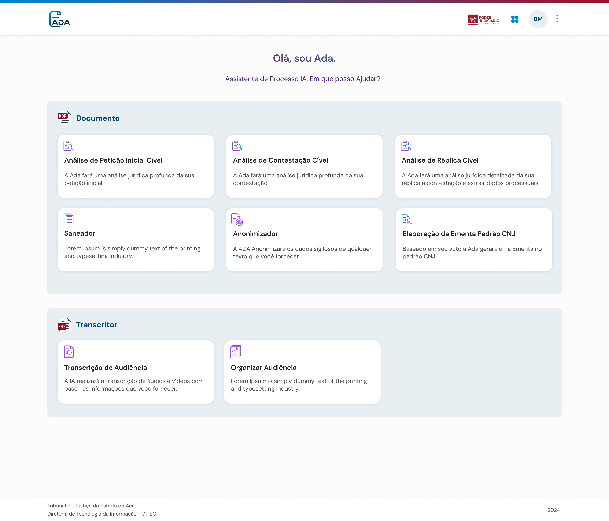
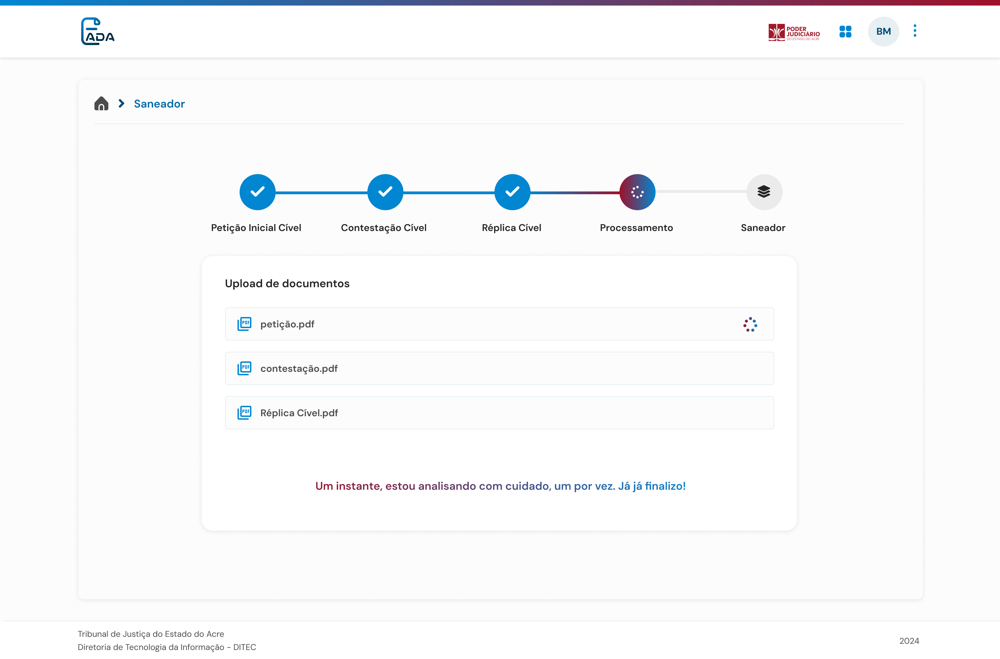
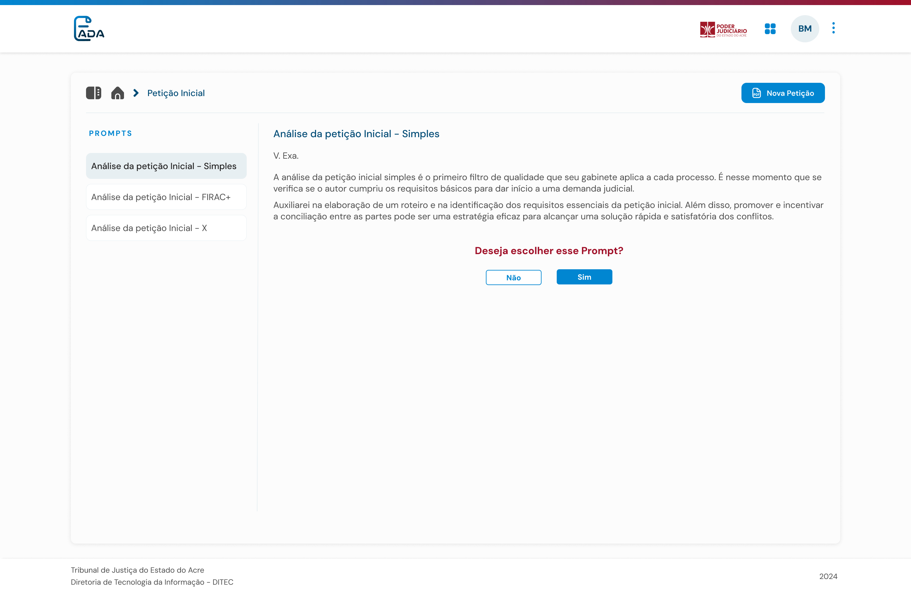
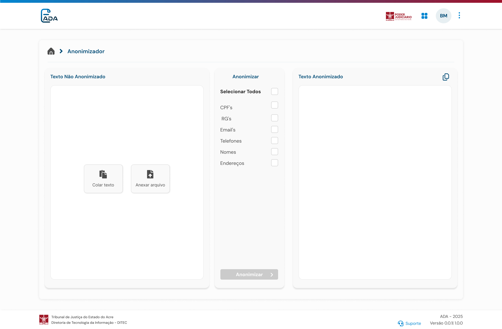
SPROL
O cálculo de pagamento dos juízes leigos e conciliadores era engessado e precisava mudar a cada nova resolução.Payment calculation for lay judges and conciliators was rigid and had to be rebuilt with each new resolution.
UX/UI Designer pesquisa com administradores, modelagem do fluxo de cálculo e design da interface web e responsivo mobile.UX/UI Designer — research with administrators, modeling the calculation flow and designing the web and mobile interface.
Na pesquisa com administradores, identificamos a oportunidade de tornar o cálculo dinâmico, adaptável a futuras resoluções sem nova implementação.Researching with administrators, we found the opportunity to make the calculation dynamic — adaptable to future resolutions with no new implementation.
Um sistema que calcula pagamentos por dias úteis, simplificando uma dinâmica complexa em um fluxo claro e fácil de usar.A system that calculates payments by business days, simplifying complex logic into a clear, easy-to-use flow.
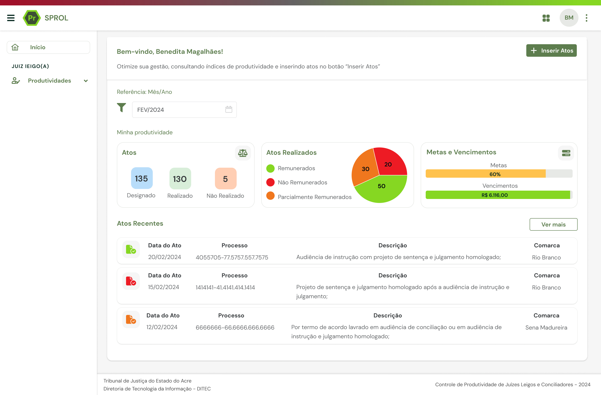
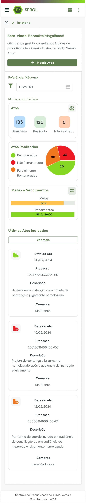
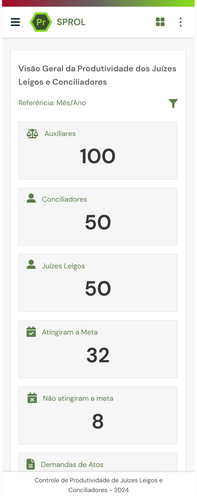
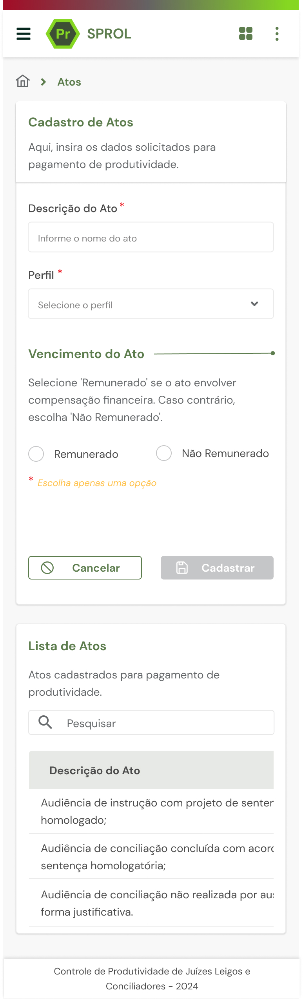
CONTRUX
Uma solução corporativa que integra planejamento, orçamento, compras, estoque, equipe, cronograma e controle financeiro da obra em um só produto.A corporate solution integrating planning, budget, procurement, inventory, team, schedule and financial control of a construction site in one product.
Pesquisa, protótipo e design de interface traduzindo um domínio complexo e denso em dados em telas claras e escaláveis.Research, prototyping and interface design — translating a complex, data-dense domain into clear, scalable screens.
Melhora a gestão da obra, reduz desperdícios, otimiza recursos e evita atrasos e custos extras.Improves site management, reduces waste, optimizes resources and prevents delays and extra costs.
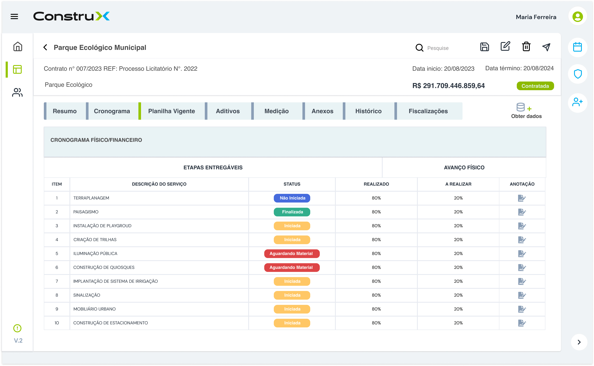
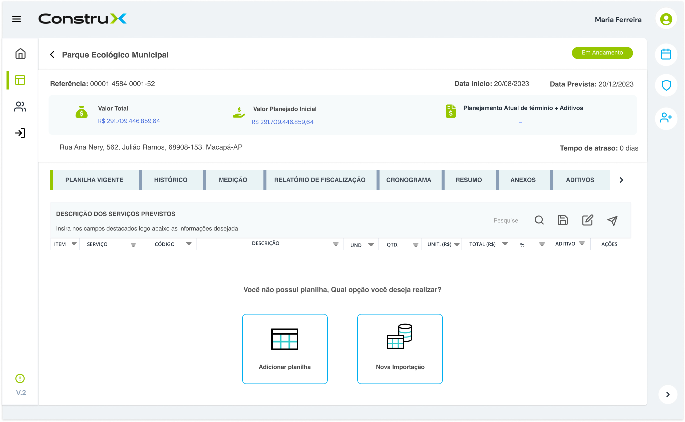
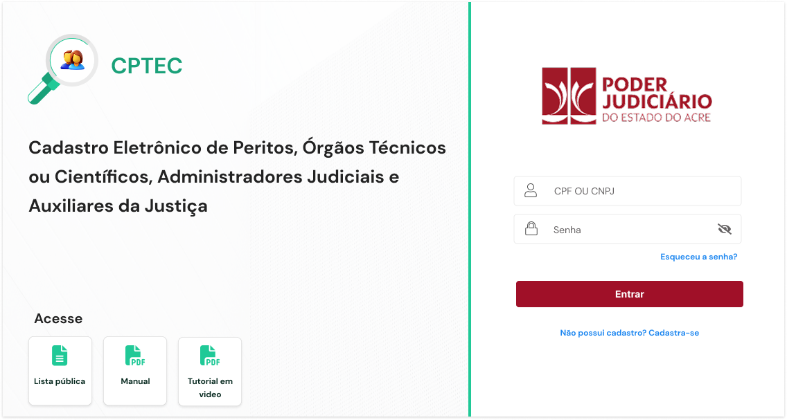
Plataforma de cadastramento de auxiliares da justiça que simplifica a nomeação de peritos e amplia o número de profissionais cadastrados.Registration platform for court auxiliaries that simplifies appointing experts and expands the number of registered professionals.
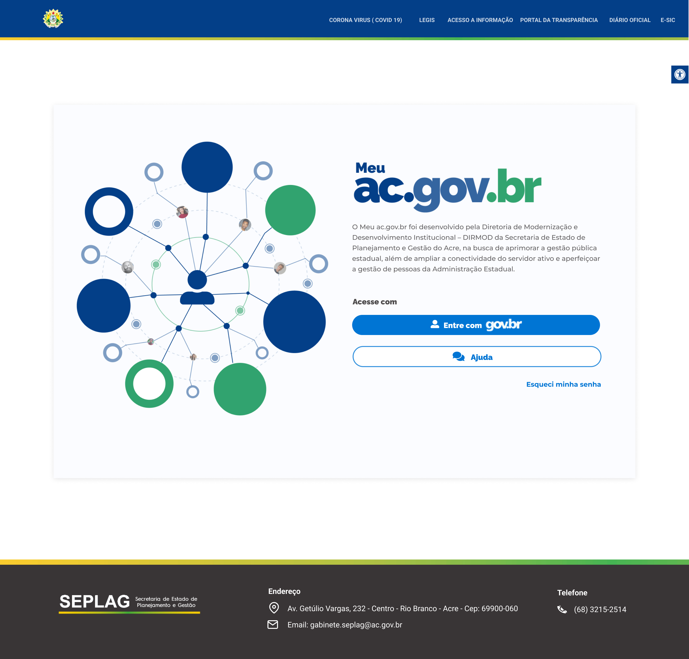
Plataforma digital do cidadão com Design System baseado no Gov.br — login único e +136 serviços disponíveis online.Citizen digital platform with a Gov.br-based Design System — single sign-on and +136 services available online.
Não é só telas um sistema.Not just screens —
a system.
Por trás dos produtos, construo e mantenho a base: tokens, tipografia e componentes reutilizáveis que garantem consistência e escalam entre times.Behind the products, I build and maintain the foundation: reusable tokens, typography and components that ensure consistency and scale across teams.